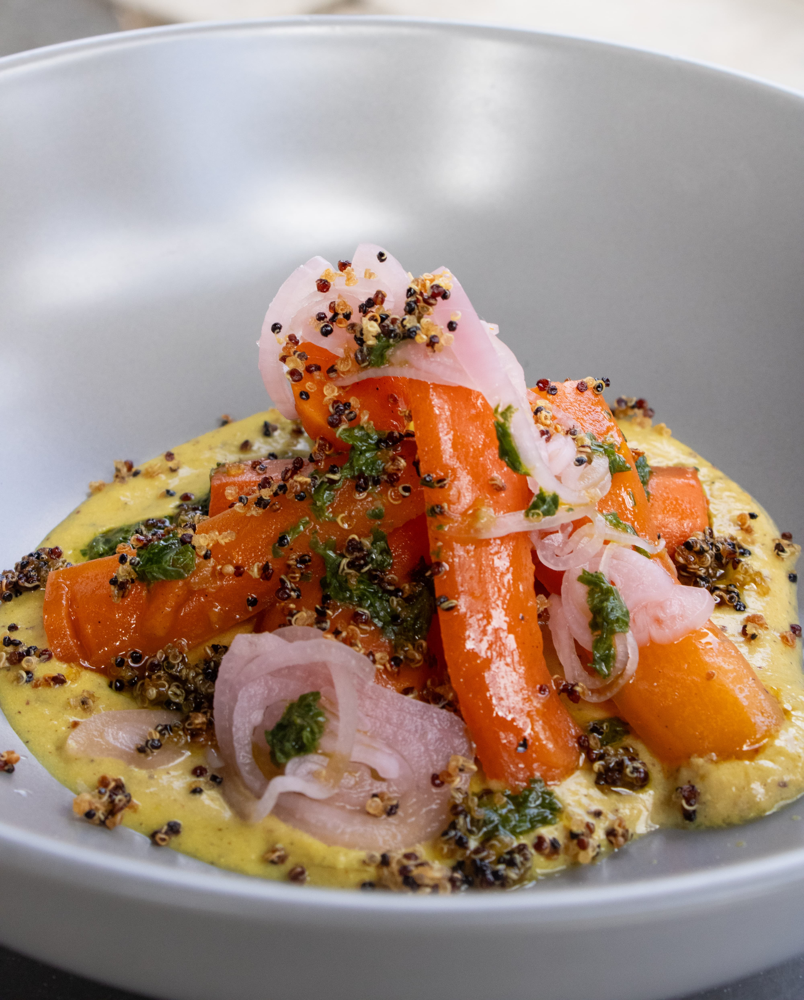

Both of these photos are ads in their own right but for me the biggest distinction comes from preparation. The left shows a photo where I had no control over color grading and composition,

Art?
while the right shows one where I had the perfect set of lighting. Being an artist is absolutely about conceding control at times, but the difference between a good and great photos can come in those margins of regaining control.